Data Visualization Masterclass - Part 1

"So What?" Framework, Pyramid Principle and the fundamentals of Dataviz
Context: This educational notebook was designed for the advanced Data Analysis lesson for Mondadori (March 2026). Dataset: The data has been simulated, inspired by the publishing world (book catalog, sales, performance) Tools: Python · Pandas · Matplotlib · Seaborn · Plotly
Notebook Structure
| Part | Content |
|---|---|
| 1 | Barbara Minto's Pyramid Principle and the "So What?" framework |
| 2 | How AI integrates into the analysis and storytelling process |
| 3 | Setup: simulated editorial dataset |
| 4 | Visual grammar: the building blocks of data visualization |
| 5 | The "catalog" of fundamental charts |
| 6 | Basic techniques: color, annotations, layout |
| 7 | Guided exercise: from data to insight with the Pyramid Principle |
Note: In Part 2 (next notebook) we will see when to choose which chart based on the communication objective and data transformation techniques.
The Pyramid Principle and the "So What?" framework
What is the Pyramid Principle?
The Pyramid Principle is a communication framework developed by Barbara Minto in the 1970s during her work at McKinsey. It is the standard method used in top consulting firms to structure any type of analytical communication.
The idea in brief
Every effective communication starts with the conclusion, not the data.
Most people communicate in a bottom-up manner: they start with data, build the analysis, and only at the end arrive at the conclusion. The Pyramid Principle reverses this approach:
❌ Bottom-up (how we naturally think):
Data → Data → Data → Analysis → Conclusion
✅ Top-down (how we should communicate):
Conclusion → Argument 1 → Argument 2 → Argument 3
↓ ↓ ↓
Evidence Evidence EvidenceThe pyramid structure
┌─────────────────┐
│ MAIN MESSAGE │ ← The answer / recommendation
│ │ (a single sentence)
└────────┬────────┘
│
┌──────────────┼──────────────┐
│ │ │
┌─────┴─────┐ ┌─────┴─────┐ ┌─────┴─────┐
│ Argument │ │ Argument │ │ Argument │ ← Key reasons
│ 1 │ │ 2 │ │ 3 │ (MECE)
└─────┬─────┘ └─────┬─────┘ └─────┬─────┘
│ │ │
Evidence Evidence Evidence ← Data, charts, factsThe 3 fundamental rules
Start with the answer — The main message goes at the top.
Group in a MECE way — Mutually Exclusive, Collectively Exhaustive: arguments do not overlap and, together, cover everything.
Order logically — By time, structure, or importance (you decide 😇).
The "So What?" Framework
The "So What?" test is the quality mechanism of the Pyramid Principle. It applies to every single element of the analysis, particularly to charts.
How it works
📊 "Thriller genre sales grew by 23% in Q3"
└─ So what?
"Thriller is outperforming all other genres"
└─ So what?
"We should reallocate the editorial budget: +30% thriller, -15% poetry"
└─ So what?
"Recommendation: Present the reallocation plan for Q1 to the editorial committee, with 3 new thriller titles in the pipeline"The 3 levels of "So What?"
| Level | Question | Output |
|---|---|---|
| L1 — Observation | What do I see? | Pattern description |
| L2 — Insight | Why is it important? | Business interpretation |
| L3 — Action | What do we do? | Concrete recommendation |
Complete editorial example
MAIN MESSAGE:
"The catalog needs to be rebalanced: 60% of revenue
comes from 15% of titles, and growing genres are underrepresented."
├── ARG 1: Excessive revenue concentration
│ ├── Chart: Pareto curve titles vs revenue
│ └── So What: High risk if 2-3 bestsellers underperform
│
├── ARG 2: Mismatch between catalog and demand
│ ├── Chart: Genre growth vs % catalog
│ └── So What: Estimated lost opportunity €2.4M/year
│
└── ARG 3: Competitors are moving
├── Chart: Market shares by genre (YoY)
└── So What: Window of opportunity is closingDescriptive titles vs. "So What?" titles
| ❌ Descriptive | ✅ "So What?" |
|---|---|
| Monthly sales 2024 | Sales are down 12% since Q2: intervention needed |
| Distribution by genre | 70% of the catalog is in contracting genres |
| Author comparison | Top 5 authors generate more revenue than the remaining 200 combined |
| Quarterly trend | Q3 is the critical quarter: every year we lose 18% |
Golden rule: If the title of your chart could be the title of any chart on the same topic, it's not a good title. A good title already contains the insight.
AI as an accelerator of the "So What?"
How AI changes the analytical workflow
TRADITIONAL (hours/days):
Raw data → Cleaning → Exploration → Charts → Patterns → Insight → Slides
AI-AUGMENTED (minutes/hours):
Raw data → AI: cleaning + EDA → Human: validation → AI: charts + draft insight
↓
Human: "So What?" test
↓
AI: refinement + presentationWhere AI is strongest (and where not)
| Task | Is AI good? | Notes |
|---|---|---|
| Generate code for charts | ✅✅✅ | Describe what you want, it generates the code |
| Explore patterns in data | ✅✅ | Good for initial EDA |
| Suggest "So What?" L1 (observation) | ✅✅ | Describes patterns well |
| Suggest "So What?" L2 (insight) | ✅ | Requires domain context |
| Suggest "So What?" L3 (action) | ⚠️ | Always requires human validation |
| Business context knowledge | ❌ | Here the data scientist is needed |
The prompt pattern for the "So What?"
CONTEXT: [Describe the business context]
DATA/CHART: [Describe what it shows]
QUESTION: Apply the "So What?" framework at 3 levels:
- L1: What do we observe?
- L2: Why is it important for [specific stakeholder]?
- L3: What concrete action do we recommend?Generative Datavis
Pro tip: When you ask AI to generate a chart, don't just say "make me a bar chart". Say "generate the code for me to create a chart showing that thriller is dominating sales". Start with the message, not the chart type.
Setup and editorial dataset creation
Installation and import
import pandas as pd
import numpy as np
import matplotlib.pyplot as plt
import matplotlib.ticker as mticker
import matplotlib.dates as mdates
import seaborn as sns
from datetime import datetime, timedelta
import warnings
warnings.filterwarnings('ignore')
import plotly.express as px
import plotly.graph_objects as go
from plotly.subplots import make_subplots
plt.rcParams['figure.figsize'] = (12, 6)
plt.rcParams['figure.dpi'] = 100
plt.rcParams['font.family'] = 'sans-serif'
plt.rcParams['axes.spines.top'] = False
plt.rcParams['axes.spines.right'] = False
sns.set_palette("husl")
np.random.seed(42)
print("Setup completato!")
print(f" Pandas: {pd.__version__}")
print(f" NumPy: {np.__version__}")Setup completato!
Pandas: 2.2.2
NumPy: 2.0.2Editorial dataset creation
Let's create a realistic dataset inspired by the publishing world. The dataset simulates the catalog and sales of a publishing house with different series, genres, and authors.
Why simulate? Simulated data allows us to control patterns and ensure that every type of chart has something interesting to show.
# DATASET — Simulazione dati editoriali
GENERI = ['Narrativa', 'Thriller', 'Saggistica', 'Fantasy', 'Romance',
'Storico', 'Sci-Fi', 'Poesia', 'Bambini', 'Young Adult']
COLLANE = ['Oscar Mondadori', 'Strade Blu', 'Contemporanea', 'Chrysalide',
'Omnibus', 'Piccoli Brividi', 'Classici Moderni', 'Voci']
FORMATI = ['Cartaceo', 'Ebook', 'Audiolibro']
CANALI = ['Libreria fisica', 'Amazon', 'E-commerce proprio', 'GDO', 'Fiere/Eventi']
GENERE_WEIGHTS = {
'Narrativa': 0.22, 'Thriller': 0.18, 'Saggistica': 0.15,
'Fantasy': 0.10, 'Romance': 0.09, 'Storico': 0.08,
'Sci-Fi': 0.06, 'Poesia': 0.02, 'Bambini': 0.05, 'Young Adult': 0.05}
n_libri = 500; n_mesi = 24
libri = pd.DataFrame({
'libro_id': range(1, n_libri + 1),
'titolo': [f"Titolo_{i:03d}" for i in range(1, n_libri + 1)],
'genere': np.random.choice(list(GENERE_WEIGHTS.keys()), n_libri, p=list(GENERE_WEIGHTS.values())),
'collana': np.random.choice(COLLANE, n_libri),
'anno_pubblicazione': np.random.choice(range(2018, 2025), n_libri, p=[.05,.05,.08,.10,.15,.25,.32]),
'pagine': np.random.normal(280, 80, n_libri).astype(int).clip(80, 800),
'prezzo_copertina': np.round(np.random.uniform(9.90, 24.90, n_libri), 2),
'rating_goodreads': np.round(np.random.normal(3.7, 0.5, n_libri).clip(1.5, 5.0), 1),
'n_recensioni': np.random.exponential(150, n_libri).astype(int).clip(5, 5000)})libri.loc[libri['genere'] == 'Thriller', 'prezzo_copertina'] *= 1.1
libri.loc[libri['genere'] == 'Narrativa', 'prezzo_copertina'] *= 1.05
libri.loc[libri['genere'] == 'Poesia', 'prezzo_copertina'] *= 0.8
libri['prezzo_copertina'] = libri['prezzo_copertina'].round(2)
date_range = pd.date_range('2023-01-01', periods=n_mesi, freq='MS')
vendite_records = []
for _, libro in libri.iterrows():
base = {'Narrativa':120,'Thriller':150,'Saggistica':80,'Fantasy':90,'Romance':70,
'Storico':50,'Sci-Fi':45,'Poesia':15,'Bambini':60,'Young Adult':55}[libro['genere']]
libro_mult = np.random.lognormal(0, 0.8)
for i, data in enumerate(date_range):
m = data.month
stag = {12:1.8, 11:1.3, 6:1.2, 7:1.2, 1:0.7, 2:0.7}.get(m, 1.0)
trend = {'Thriller':1+i*0.015,'Fantasy':1+i*0.01,'Young Adult':1+i*0.012,
'Poesia':1-i*0.008,'Saggistica':1-i*0.003}.get(libro['genere'], 1.0)
for fmt in FORMATI:
fs = {'Cartaceo':0.55,'Ebook':0.30,'Audiolibro':0.15}[fmt]
if fmt=='Ebook': fs *= (1+i*0.005)
if fmt=='Audiolibro': fs *= (1+i*0.02)
copie = max(0, int(base*libro_mult*stag*trend*fs*np.random.lognormal(0,0.3)))
if copie > 0:
vendite_records.append({'libro_id':libro['libro_id'],'data':data,'formato':fmt,
'canale':np.random.choice(CANALI,p=[.30,.35,.15,.12,.08]),'copie_vendute':copie,
'ricavo':round(copie*libro['prezzo_copertina']*{'Cartaceo':1,'Ebook':.65,'Audiolibro':.55}[fmt],2)})
vendite = pd.DataFrame(vendite_records)
df = vendite.merge(libri, on='libro_id', how='left')
df['anno'] = df['data'].dt.year
print(f"Dataset creato!")
print(f" Libri: {len(libri):,} | Record vendite: {len(vendite):,}")
print(f" Periodo: {date_range[0].strftime('%b %Y')} - {date_range[-1].strftime('%b %Y')}")
df.head(3)Dataset creato!
Libri: 500 | Record vendite: 35,904
Periodo: Jan 2023 - Dec 2024 libro_id data formato canale copie_vendute \
0 1 2023-01-01 Cartaceo Fiere/Eventi 43
1 1 2023-01-01 Ebook E-commerce proprio 15
2 1 2023-01-01 Audiolibro Amazon 11
ricavo titolo genere collana anno_pubblicazione pagine \
0 1035.87 Titolo_001 Thriller Piccoli Brividi 2020 272
1 234.88 Titolo_001 Thriller Piccoli Brividi 2020 272
2 145.74 Titolo_001 Thriller Piccoli Brividi 2020 272
prezzo_copertina rating_goodreads n_recensioni anno
0 24.09 3.1 8 2023
1 24.09 3.1 8 2023
2 24.09 3.1 8 2023I want to point out just one thing: the dataset is generated from 3 nested loops, namely:
For each book (500 books)
└─ For each month (24 months: Jan 2023 → Dec 2024)
└─ For each format (3: Print, Ebook, Audiobook)The theoretical maximum would be 500 × 24 × 3 = 36,000 records. We get ~35,904 because some are discarded (copies = 0).
df.info()<class 'pandas.core.frame.DataFrame'>
RangeIndex: 35904 entries, 0 to 35903
Data columns (total 15 columns):
# Column Non-Null Count Dtype
--- ------ -------------- -----
0 libro_id 35904 non-null int64
1 data 35904 non-null datetime64[ns]
2 formato 35904 non-null object
3 canale 35904 non-null object
4 copie_vendute 35904 non-null int64
5 ricavo 35904 non-null float64
6 titolo 35904 non-null object
7 genere 35904 non-null object
8 collana 35904 non-null object
9 anno_pubblicazione 35904 non-null int64
10 pagine 35904 non-null int64
11 prezzo_copertina 35904 non-null float64
12 rating_goodreads 35904 non-null float64
13 n_recensioni 35904 non-null int64
14 anno 35904 non-null int32
dtypes: datetime64[ns](1), float64(3), int32(1), int64(5), object(5)
memory usage: 4.0+ MBprint("=" * 60)
print("DATASET SCHEMA")
print("=" * 60)
print(f"\nDimensions: {df.shape[0]:,} rows x {df.shape[1]} columns")
for col in df.columns:
print(f" {col:25s} {str(df[col].dtype):10s} ({df[col].nunique():,} unique)")
print(f"\nTotal revenue: EUR {df['ricavo'].sum():,.0f}")
print(f"Total copies: {df['copie_vendute'].sum():,.0f}")============================================================
DATASET SCHEMA
============================================================Dimensioni: 35,904 righe x 15 colonne book_id int64 (500 unici) date datetime64[ns] (24 unici) format object (3 unici) channel object (5 unici) copies_sold int64 (680 unici) revenue float64 (22,906 unici) title object (500 unici) genre object (10 unici) series object (8 unici) publication_year int64 (7 unici) pages int64 (254 unici) cover_price float64 (428 unici) goodreads_rating float64 (28 unici) num_reviews int64 (265 unici) year int32 (2 unici)
Total revenue: EUR 28,967,296 Total copies: 1,987,829
---
# Visual grammar
We introduce the 7 visual properties (position, length, angle, area, color saturation, color hue, shape) with an effectiveness ranking for quantitative vs categorical data.
We then explain Tufte's Data-Ink Ratio concept and examine it together.
## The 7 visual properties (Visual Encoding)
| # | Property | Quant. | Categ. |
|---|----------|--------|--------|
| 1 | **Position** (x/y axis) | ⭐⭐⭐⭐⭐ | ⭐⭐⭐⭐ |
| 2 | **Length** (bars) | ⭐⭐⭐⭐ | — |
| 3 | **Angle/Slope** | ⭐⭐⭐ | — |
| 4 | **Area** (bubble, treemap) | ⭐⭐ | — |
| 5 | **Color (saturation)** | ⭐⭐ | — |
| 6 | **Color (hue)** | ⭐ | ⭐⭐⭐⭐⭐ |
| 7 | **Shape** | — | ⭐⭐⭐ |
## The Data-Ink Ratio (Edward Tufte)
> *"Excellence in statistical graphics consists of complex ideas communicated with clarity, precision, and efficiency."*
**Data-Ink Ratio** = Data ink / Total ink. It should tend towards 1.
```python
# Data-Ink Ratio — Before and After
generi_top5 = df.groupby('genere')['ricavo'].sum().nlargest(5).sort_values()
fig, (ax1, ax2) = plt.subplots(1, 2, figsize=(16, 5))
# PRIMA: basso data-ink ratio
ax1.barh(generi_top5.index, generi_top5.values/1e6,
color=['#ff6b6b','#ffa94d','#ffd43b','#69db7c','#4dabf7'], edgecolor='black', linewidth=1.5)
ax1.set_facecolor('#f0f0f0'); ax1.grid(True, linewidth=0.8, color='white')
ax1.set_title('Revenue by Genre (M EUR)', fontsize=14, fontweight='bold')
ax1.spines['top'].set_visible(True); ax1.spines['right'].set_visible(True)
for s in ax1.spines.values(): s.set_linewidth(2)
ax1.text(0.5,-0.15,'BEFORE: too much ink, too little data',transform=ax1.transAxes,ha='center',fontsize=11,color='red')
# DOPO: alto data-ink ratio
bars = ax2.barh(generi_top5.index, generi_top5.values/1e6, color='#2c3e50', height=0.6)
ax2.set_title(f'Thriller leads revenue with EUR {generi_top5.max()/1e6:.1f}M',
fontsize=13, fontweight='bold', loc='left', pad=10)
for sp in ['top','right','bottom','left']: ax2.spines[sp].set_visible(False)
ax2.xaxis.set_visible(False); ax2.tick_params(left=False)
for bar,val in zip(bars, generi_top5.values/1e6):
ax2.text(val+0.1, bar.get_y()+bar.get_height()/2, f'EUR {val:.1f}M', va='center', fontsize=11, fontweight='bold')
bars[-1].set_color('#e74c3c')
ax2.text(0.5,-0.15,'AFTER: clean, "So What?" in the title',transform=ax2.transAxes,ha='center',fontsize=11,color='green')
plt.tight_layout(); plt.show()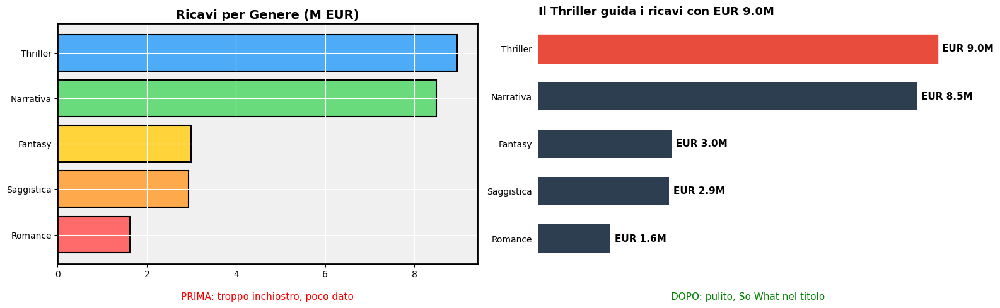
Catalog of fundamental charts
For each chart family, we show a concrete example using the editorial dataset, always with a "So What?" title and annotations.
| Category | Charts | Question |
|---|---|---|
| Comparison | Bar, Grouped bar, Lollipop | Which is larger? |
| Distribution | Histogram, Box, Violin, KDE | How are they distributed? |
| Relationship | Scatter, Heatmap, Correlation | Is there a correlation? |
| Hierarchy | Stacked bar, Treemap | How and what is it composed of? |
| Trend | Line, Area | How does it change over time? |
Comparison charts: 50 shades of Bar Chart
The following horizontal bar chart shows revenue by genre ordered by value, with the top 2 highlighted in red/orange and a yellow box in the bottom right with the recommendation. The grouped bar chart compares copies sold by format across the top 5 genres, showing that print dominates everywhere. The lollipop chart visualizes the average Goodreads rating by genre with a vertical line at the global average and green/red points above/below average.
Golden rules: horizontal bars for longer names, order by value on the Y-axis starting from zero.
# BAR CHART: Revenue by Genre
ricavi_genere = df.groupby('genere')['ricavo'].sum().sort_values(ascending=True) / 1e6
fig, ax = plt.subplots(figsize=(12, 6))
colors = ['#2c3e50']*len(ricavi_genere); colors[-1]='#e74c3c'; colors[-2]='#e67e22'
bars = ax.barh(ricavi_genere.index, ricavi_genere.values, color=colors, height=0.65)
for bar,val in zip(bars, ricavi_genere.values):
ax.text(val+0.15, bar.get_y()+bar.get_height()/2, f'EUR {val:.1f}M', va='center', fontsize=10, fontweight='bold',
color='#e74c3c' if val==ricavi_genere.max() else '#2c3e50')
ax.set_title('Thriller and Fiction alone account for {:.0f}% of total revenue'.format(
(ricavi_genere.nlargest(2).sum()/ricavi_genere.sum())*100),
fontsize=14, fontweight='bold', loc='left', pad=15)
ax.xaxis.set_visible(False)
for sp in ['bottom','left']: ax.spines[sp].set_visible(False)
ax.tick_params(left=False)
ax.text(0.98,0.02,'So What? Dependence on 2 genres is a risk.\nDiversify into Fantasy, Non-Fiction, and Romance.',
transform=ax.transAxes,fontsize=9,va='bottom',ha='right',
bbox=dict(boxstyle='round,pad=0.5',facecolor='#fffde7',alpha=0.8))
plt.tight_layout(); plt.show()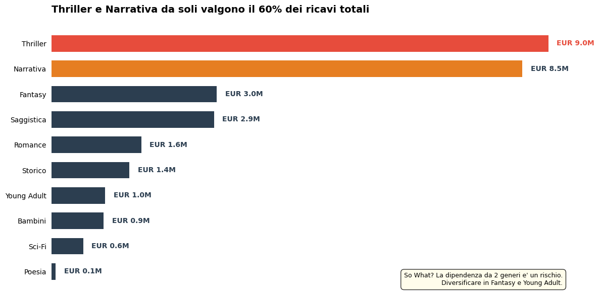
If a Thriller or Fiction bestseller underperforms, the impact on revenue is disproportionate due to a concentration risk.
It is therefore suggested to strengthen the "medium" genres (Fantasy, Non-Fiction, Romance) which already have significant volumes but can grow, to reduce dependence on the top 2.
# BAR CHART with part-of-whole annotation
ricavi_genere = df.groupby('genere')['ricavo'].sum().sort_values(ascending=True) / 1e6
top2_pct = (ricavi_genere.nlargest(2).sum() / ricavi_genere.sum()) * 100
fig, ax = plt.subplots(figsize=(12, 6))
colors = ['#2c3e50'] * len(ricavi_genere)
colors[-1] = '#e74c3c'
colors[-2] = '#e67e22'
bars = ax.barh(ricavi_genere.index, ricavi_genere.values, color=colors, height=0.65)
for bar, val in zip(bars, ricavi_genere.values):
ax.text(val + 0.15, bar.get_y() + bar.get_height() / 2,
f'EUR {val:.1f}M', va='center', fontsize=10, fontweight='bold',
color='#e74c3c' if val == ricavi_genere.max() else '#2c3e50')
# --- Visual "bracket" annotation for 60% ---
n = len(ricavi_genere)
y_top = n - 1 # position of Thriller bar (highest, last in asc sort)
y_second = n - 2 # Fiction
x_bracket = ricavi_genere.max() + 1.2
# Vertical and horizontal lines of the bracket
ax.annotate('', xy=(x_bracket, y_top + 0.32), xytext=(x_bracket, y_second - 0.32),
arrowprops=dict(arrowstyle='-', color='#555', lw=1.5))
ax.plot([ricavi_genere.iloc[-1] + 0.15, x_bracket], [y_top + 0.32, y_top + 0.32], color='#555', lw=1.5)
ax.plot([ricavi_genere.iloc[-2] + 0.15, x_bracket], [y_second - 0.32, y_second - 0.32], color='#555', lw=1.5)
# Percentage label
ax.text(x_bracket + 0.15, (y_top + y_second) / 2,
f'{top2_pct:.0f}%\nof total', va='center', fontsize=11,
fontweight='bold', color='#c0392b')
ax.set_title(
'Thriller and Fiction alone account for {:.0f}% of total revenue'.format(top2_pct),
fontsize=14, fontweight='bold', loc='left', pad=15)
ax.xaxis.set_visible(False)
for sp in ['bottom', 'left']:
ax.spines[sp].set_visible(False)
ax.tick_params(left=False)
ax.set_xlim(0, ricavi_genere.max() + 2.5) # space for bracket
ax.text(0.98, 0.02,
'So What? Dependence on 2 genres is a risk.\nDiversify into Fantasy and Young Adult.',
transform=ax.transAxes, fontsize=9, va='bottom', ha='right',
bbox=dict(boxstyle='round,pad=0.5', facecolor='#fffde7', alpha=0.8))
plt.tight_layout()
plt.show()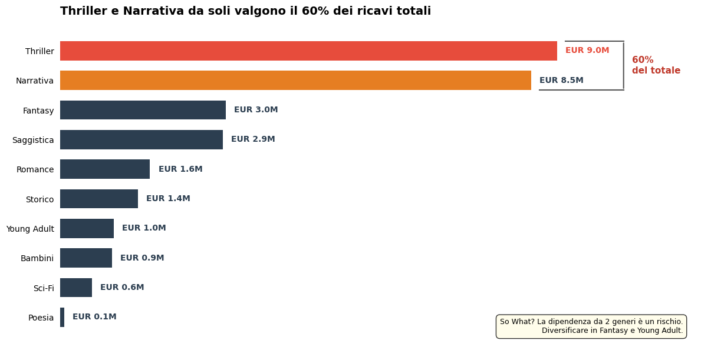
Grouped Bar Chart
# GROUPED BAR: Sales by format and genre (Top 5)
top5_g = df.groupby('genere')['ricavo'].sum().nlargest(5).index
vf = (df[df['genere'].isin(top5_g)].groupby(['genere','formato'])['copie_vendute'].sum().reset_index())
piv = vf.pivot(index='genere',columns='formato',values='copie_vendute')
piv = piv.loc[piv.sum(axis=1).sort_values(ascending=True).index]
fig, ax = plt.subplots(figsize=(12,6))
fc = {'Print':'#2c3e50','Ebook':'#3498db','Audiobook':'#e74c3c'}
x = np.arange(len(piv)); w = 0.25
for i,(fmt,c) in enumerate(fc.items()):
if fmt in piv.columns:
v = piv[fmt].values/1000
ax.barh(x+i*w, v, w, label=fmt, color=c, alpha=0.85)
ax.set_yticks(x+w); ax.set_yticklabels(piv.index,fontsize=11)
ax.legend(loc='lower right', title='Copies sold'); ax.xaxis.set_visible(False)
ax.set_title("Print sells 2x more than ebooks in every genre", fontsize=13, fontweight='bold', loc='left',pad=15)
for sp in ['bottom','left']: ax.spines[sp].set_visible(False)
ax.tick_params(left=False); plt.tight_layout(); plt.show()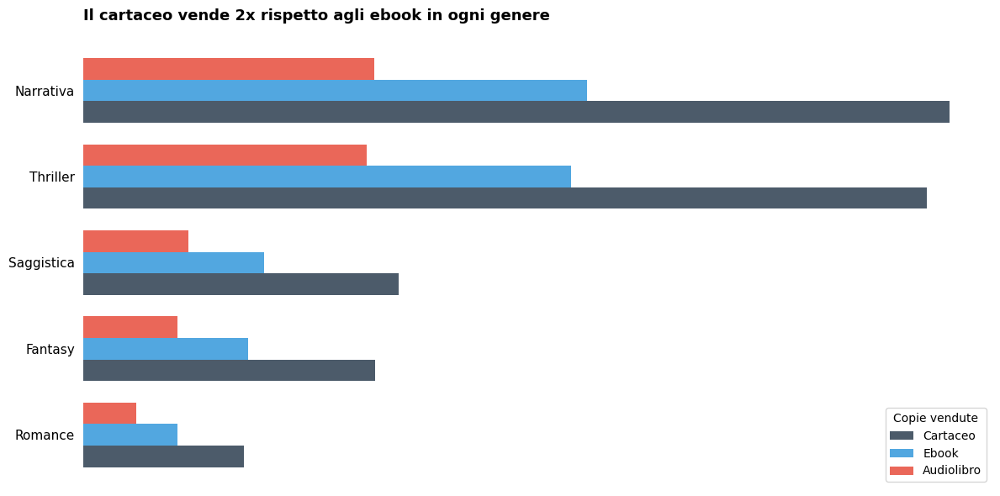
Lollipop Chart: the best data-ink ratio of the bar chart
# LOLLIPOP: Average rating by genre
rg = df.groupby('genere')['rating_goodreads'].mean().sort_values(ascending=True)
fig, ax = plt.subplots(figsize=(10,6))
mg = df['rating_goodreads'].mean()
ax.axvline(mg, color='#bdc3c7', linestyle='--', linewidth=1, label=f'Media: {mg:.2f}')
clr = ['#27ae60' if v>=mg else '#e74c3c' for v in rg.values]
ax.hlines(y=rg.index, xmin=mg, xmax=rg.values, color=clr, linewidth=2)
ax.scatter(rg.values, rg.index, color=clr, s=80, zorder=5)
for i,(g,v) in enumerate(rg.items()):
ax.text(v+(0.03 if v>=mg else -0.03), i, f'{v:.2f}', va='center',
ha='left' if v>=mg else 'right', fontsize=10, fontweight='bold', color=clr[i])
ax.set_title('Fiction and historical essays have the best reviews', fontsize=13, fontweight='bold', loc='left',pad=15)
for sp in ['bottom','left']: ax.spines[sp].set_visible(False)
ax.xaxis.set_visible(False); ax.tick_params(left=False); ax.legend(loc='lower right',fontsize=9)
plt.tight_layout(); plt.show()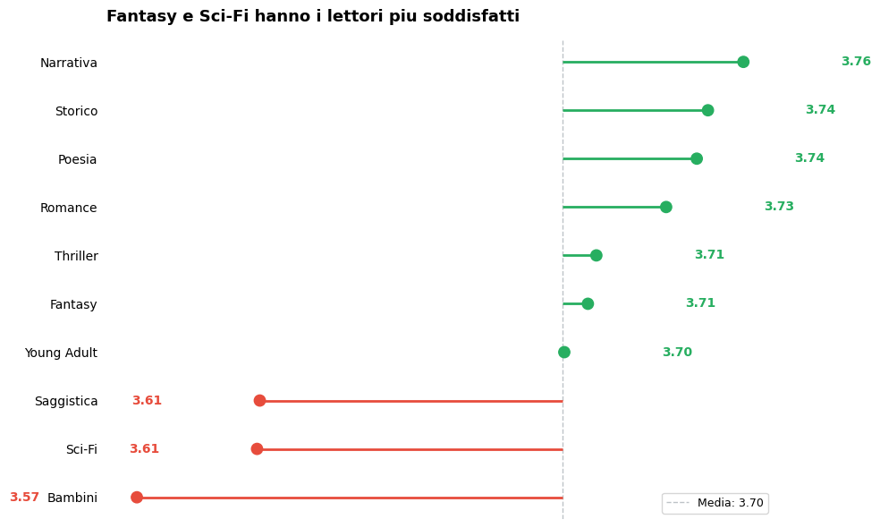
Distribution Charts
Now let's first look at the histogram. Specifically, this is shown three times on the same data (cover price) with 5, 20, and 50 bins to demonstrate how the choice of bins changes the perceived message.
Then the box plot, which compares the distribution of prices by genre, ordered by decreasing median.
The violin plot shows the distribution of copies sold (on a log scale) by format, highlighting that audiobooks have a very concentrated distribution.
The KDE overlays the price density curves by publication year (2021-2024), showing the upward shift in recent prices.
Histogram: pay attention to the number of bins!
# HISTOGRAM: Effect of bins
fig, axes = plt.subplots(1,3,figsize=(16,5))
for ax,nb,t in zip(axes,[5,20,50],['5 bins: too few','20 bins: just right','50 bins: too many']):
ax.hist(libri['prezzo_copertina'],bins=nb,color='#3498db',edgecolor='white',alpha=0.8)
ax.set_title(t,fontsize=11,fontweight='bold'); ax.set_xlabel('Price EUR')
ax.spines['top'].set_visible(False); ax.spines['right'].set_visible(False)
plt.suptitle('The number of bins changes the message!',fontsize=14,fontweight='bold',y=1.02)
plt.tight_layout(); plt.show()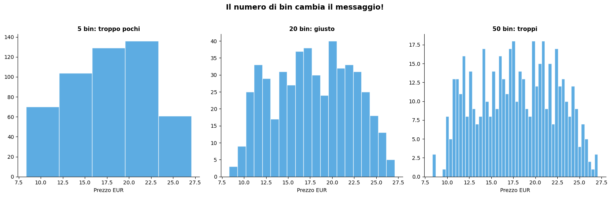
Box Plot: 5 statistics in one go
The 5 statistics of the box plot are:
- Median — the central line in the box
- Q1 (1st quartile) — bottom edge of the box
- Q3 (3rd quartile) — top edge of the box
- Whiskers — extend to Q1 − 1.5×IQR and Q3 + 1.5×IQR
- Outliers — isolated points beyond the whiskers
The central box encloses 50% of the data (the IQR, interquartile range)
# BOX PLOT: Price by genre
om = libri.groupby('genere')['prezzo_copertina'].median().sort_values(ascending=False).index
fig, ax = plt.subplots(figsize=(14,6))
bp = ax.boxplot([libri[libri['genere']==g]['prezzo_copertina'] for g in om],
labels=om, patch_artist=True, widths=0.6,
medianprops=dict(color='#e74c3c',linewidth=2), whiskerprops=dict(color='#7f8c8d'))
for patch,c in zip(bp['boxes'],['#3498db','#2ecc71']*5):
patch.set_facecolor(c); patch.set_alpha(0.4)
ax.set_title('Thriller and Fiction have the highest and most variable prices',
fontsize=13,fontweight='bold',loc='left',pad=15)
ax.set_ylabel('Price EUR'); ax.tick_params(axis='x',rotation=30)
plt.tight_layout(); plt.show()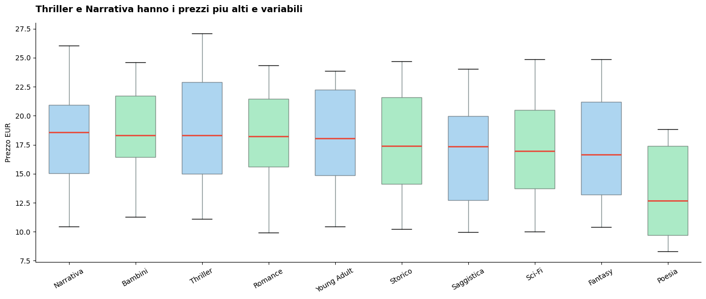
📢 ATTENTION 📢
Here the colors do not encode any variable; they alternate blue and green merely for "decoration," but there is no legend or associated meaning.
In fact, they could potentially confuse: the reader asks "what does blue vs. green mean?" and the answer is... nothing.
Here the color should either be uniform (a single gray/blue for all) or encode something useful, for example, highlighting in red the genres with a median above a certain target price, and gray for the others. This way, the color would have a "So What?".
This is exactly the principle of part 6 and partly seen before: gray = default, color only for highlighting
Violin Plot
The violin plot is a box plot that has learned to speak😀: in addition to the 5 classic statistics, it shows the density of the distribution along its entire height. Where the violin is wider, more data is concentrated there.
In general, when to choose:
- Box plot: rapid comparisons between many categories (>5), non-technical audience, limited space. The box plot is immediate and universal.
- Violin plot: when the shape of the distribution is the true story to be told. A bimodal distribution (two humps) is invisible in the box plot but evident in the violin. The same applies to very asymmetric distributions or those with particular concentrations at certain values.
Practical rule: if you are comparing medians → box plot. If you are comparing how the data behaves → violin plot.
# === CHART 1: Violin Plot ===
# Message: the audiobook has a concentrated distribution
fig, ax = plt.subplots(figsize=(10, 6))
ds = df.sample(10000, random_state=42)
formats = ['Cartaceo', 'Ebook', 'Audiolibro']
violin_data = []
for f in formats:
vals = np.log10(ds[ds['formato'] == f]['copie_vendute'].clip(1))
for v in vals:
violin_data.append({'format': f, 'log10_copie': v})
violin_df = pd.DataFrame(violin_data)
# Gray for all, red only for the audiobook (it's the message)
palette_violin = {
'Cartaceo': '#bdc3c7',
'Ebook': '#bdc3c7',
'Audiolibro': '#e74c3c'
}
sns.violinplot(data=violin_df, x='format', y='log10_copie',
palette=palette_violin, inner='quartile',
order=formats, ax=ax, linewidth=1.2, saturation=0.8)
# Median annotation in readable units
for i, f in enumerate(formats):
med = np.log10(ds[ds['formato'] == f]['copie_vendute'].clip(1)).median()
label = f'{10**med:.0f} copies'
ax.annotate(label, xy=(i, med), xytext=(i + 0.45, med),
fontsize=10, fontweight='bold',
color='#e74c3c' if f == 'Audiolibro' else '#7f8c8d',
arrowprops=dict(arrowstyle='-', color='gray', lw=0.5))
ax.set_title(
"The audiobook has a concentrated distribution: few bestsellers",
#"few bestsellers, many titles with low sales",
fontsize=12, fontweight='bold', loc='left', pad=15)
ax.set_xlabel('')
ax.set_ylabel('Copies sold (log10 scale)')
ax.spines['top'].set_visible(False)
ax.spines['right'].set_visible(False)
plt.tight_layout(); plt.show()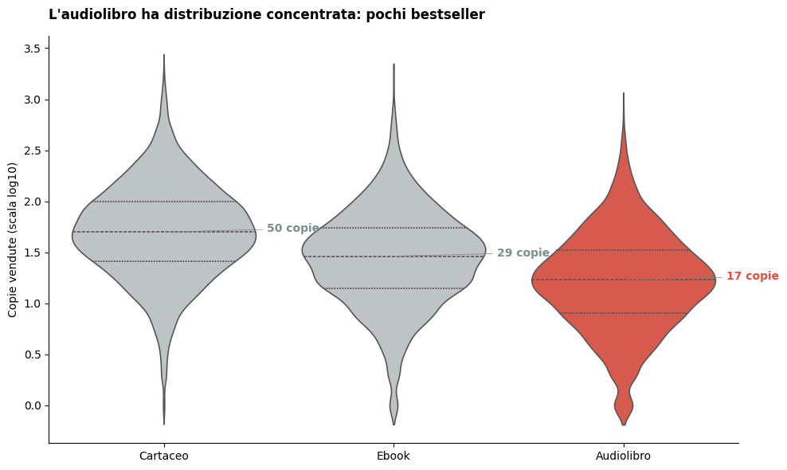
Why the log10 scale?
Because book sales follow a very asymmetric log-normal distribution. Few bestsellers sell thousands of copies while most titles sell only a few tens.
In a linear scale, the violin would be squashed at the bottom with a long, invisible tail upwards.
KDE Plot
from scipy import stats
fig, ax = plt.subplots(figsize=(12, 6))
genres_kde = ['Poesia', 'Saggistica', 'Fantasy', 'Narrativa', 'Thriller']
x_range = np.linspace(5, 35, 300)
styles = {
'Poesia': {'color': '#bdc3c7', 'lw': 1.5, 'alpha': 0.5, 'ls': ':'},
'Saggistica': {'color': '#bdc3c7', 'lw': 1.5, 'alpha': 0.5, 'ls': '--'},
'Fantasy': {'color': '#bdc3c7', 'lw': 1.5, 'alpha': 0.5, 'ls': '-.'},
'Narrativa': {'color': '#e67e22', 'lw': 3, 'alpha': 0.9, 'ls': '-'},
'Thriller': {'color': '#e74c3c', 'lw': 3, 'alpha': 0.9, 'ls': '-'},
}
for genre in genres_kde:
subset = libri[libri['genere'] == genre]['prezzo_copertina']
if len(subset) < 5:
continue
kde = stats.gaussian_kde(subset)
y_vals = kde(x_range)
s = styles[genre]
med = subset.median()
ax.plot(x_range, y_vals, color=s['color'], linewidth=s['lw'],
alpha=s['alpha'], linestyle=s['ls'],
label=f'{genre} (EUR {med:.0f})')
ax.vlines(med, 0, kde(med)[0], color=s['color'],
linewidth=1, alpha=0.4, linestyle=s['ls'])
ax.yaxis.set_visible(False)
for sp in ['left', 'top', 'right']:
ax.spines[sp].set_visible(False)
ax.set_xlabel('Cover price (EUR)', fontsize=11)
ax.set_xlim(5, 35)
ax.legend(loc='center left', bbox_to_anchor=(1.02, 0.5),
fontsize=10, frameon=False,
title='Genre (median)', title_fontsize=10)
ax.set_title(
'Thriller and Fiction in the high range, Poetry and Non-fiction in the low range',
fontsize=13, fontweight='bold', loc='left', pad=15)
# Caption: explains how to read the chart
fig.text(0.02, -0.02,
'Each curve shows how cover prices are distributed by genre. '
'The higher the curve, the more books are concentrated at that price. '
'Vertical lines indicate the median.',
fontsize=9, color='#7f8c8d', style='italic', va='top')
plt.tight_layout()
plt.show()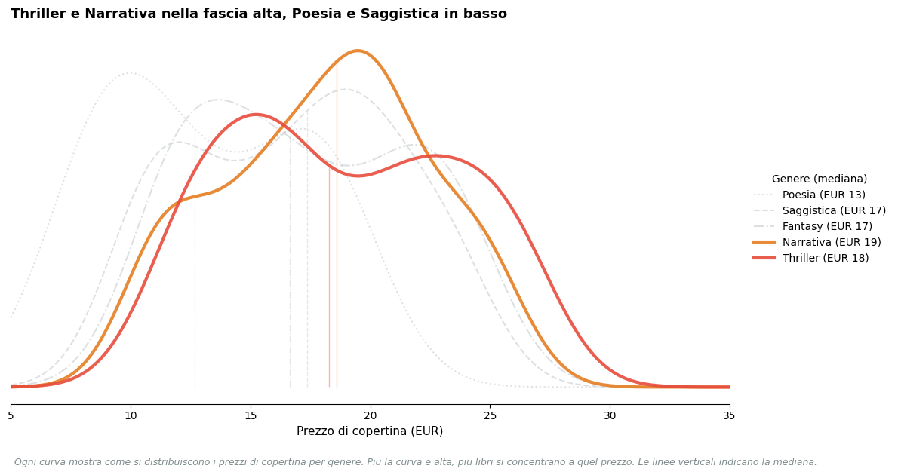
Relationship Charts
Now we will see:
scatter plot, mapping Goodreads rating (x) vs total revenue (y) for each book, with color = genre and point size = number of reviews, showing that a high rating does not guarantee high revenue.
The heatmap shows the genre × month matrix with intensity normalized per row, with a rectangle highlighting the December column.
The correlation matrix uses a triangular mask and a divergent RdBu palette, revealing that the number of reviews is the best predictor of revenue.
Scatter Plot
The scatter plot maps the relationship between two continuous variables. Each point is an observation (in this case, a book) and its position on the plane reveals whether a correlation exists. In this example, we want to answer a common question in the publishing industry: does a high Goodreads rating translate into high revenue?
The answer is not obvious. A book can have 4.8 stars and be read by 30 people, or 3.5 stars and sell hundreds of thousands of copies. The discriminating factor is not perceived quality but visibility, approximated by the number of reviews.
Design choices made by me:
- X-axis = Goodreads rating, Y-axis = total revenue in EUR
- Color = number of reviews, grouped into 4 bands $(< 50, 50-200, 200-1K, > 1K)$ with a sequential gray → red palette. This is the real driver and should stand out.
- Uniform size: let's remember that the human eye is bad at comparing areas (see Part 4: visual properties). It's better to use color and divide the classes into 4 bands, with a clear ordering (few = gray, many = red).
- Genre in hover, not in the legend: the chart's message is not about genres. Using 10 colors per genre would have hidden the main pattern. The genre remains available on hover for those who want to explore.
- Interactive Plotly: allows hovering over each point to see genre, price, copies, and reviews. Exploration replaces the crowded legend. However, I consider this choice to be of last importance compared to the others made.
ls = (df.groupby(['libro_id','genere','rating_goodreads','n_recensioni','prezzo_copertina'])
.agg(ricavo_totale=('ricavo','sum'), copie_totali=('copie_vendute','sum')).reset_index())
ls['fascia_recensioni'] = pd.cut(
ls['n_recensioni'],
bins=[0, 50, 200, 1000, 10000],
labels=['< 50', '50-200', '200-1K', '> 1K']
)
fig = px.scatter(
ls,
x='rating_goodreads',
y='ricavo_totale',
color='fascia_recensioni',
color_discrete_map={
'< 50': '#d5d8dc',
'50-200': '#aeb6bf',
'200-1K': '#e67e22',
'> 1K': '#e74c3c',
},
category_orders={'fascia_recensioni': ['< 50', '50-200', '200-1K', '> 1K']},
hover_data={
'genere': True,
'n_recensioni': True,
'prezzo_copertina': ':.2f',
'copie_totali': ':,.0f',
'ricavo_totale': ':,.0f',
'rating_goodreads': ':.1f',
'fascia_recensioni': False,
},
labels={
'rating_goodreads': 'Rating Goodreads',
'ricavo_totale': 'Total Revenue (EUR)',
'fascia_recensioni': 'No. of Reviews',
'genere': 'Genre',
'n_recensioni': 'Reviews',
'prezzo_copertina': 'Price',
'copie_totali': 'Copies sold',
},
opacity=0.6,
)
fig.update_traces(marker=dict(size=8, line=dict(width=0)))
fig.update_layout(
title=dict(
text=(
'<b>High rating does not guarantee revenue: '
'reviews are needed</b>'
'<br><sup>Each point = a book. '
'Color = review volume. Hover for details.</sup>'
),
x=0, xanchor='left',
),
template='plotly_white',
height=550, width=900,
legend=dict(
title='No. of Reviews',
orientation='v',
yanchor='top', y=0.98,
xanchor='left', x=1.02,
font=dict(size=11),
),
xaxis=dict(dtick=0.5),
)
fig.show()Heatmap: Seasonality by genre
# HEATMAP: Vendite per genere e mese
hd = df.groupby([df['data'].dt.month_name(),'genere'])['copie_vendute'].sum().reset_index()
hd.columns = ['mese','genere','copie']
mo = ['January','February','March','April','May','June','July','August','September','October','November','December']
ml = ['Jan','Feb','Mar','Apr','May','Jun','Jul','Aug','Sep','Oct','Nov','Dec']
ph = hd.pivot(index='genere',columns='mese',values='copie')[mo]
pn = ph.div(ph.max(axis=1),axis=0)
fig, ax = plt.subplots(figsize=(14,7))
sns.heatmap(pn, annot=False, cmap='YlOrRd', linewidths=0.5, xticklabels=ml, ax=ax)
ax.set_title("December is the golden month for ALL genres",fontsize=12,fontweight='bold',loc='left',pad=15)
ax.set_ylabel(''); ax.set_xlabel('')
from matplotlib.patches import Rectangle
ax.add_patch(Rectangle((11,0),1,len(pn),linewidth=3,edgecolor='#2c3e50',facecolor='none'))
plt.tight_layout(); plt.show()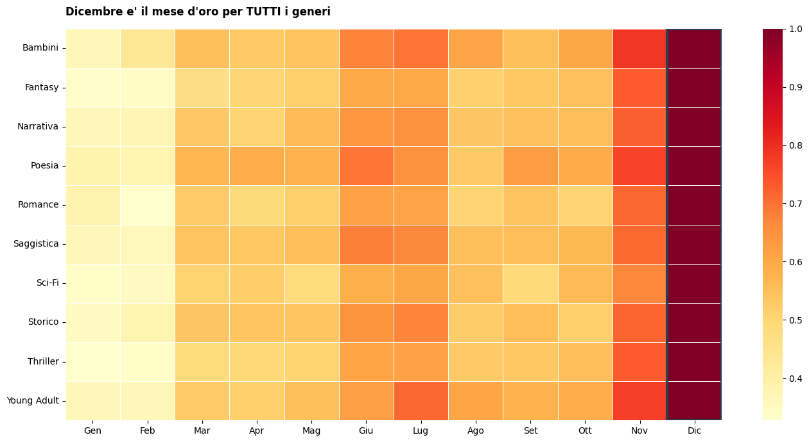
Correlation matrix
# CORRELATION MATRIX
lf = df.groupby('libro_id').agg(ricavo_totale=('ricavo','sum'),copie_totali=('copie_vendute','sum')).reset_index().merge(libri,on='libro_id')
nc = ['prezzo_copertina','pagine','rating_goodreads','n_recensioni','ricavo_totale','copie_totali']
li = ['Price','Pages','Rating','N.Reviews','Revenue','Copies']
corr = lf[nc].corr()
mask = np.triu(np.ones_like(corr,dtype=bool))
fig, ax = plt.subplots(figsize=(9,7))
sns.heatmap(corr,mask=mask,annot=True,fmt='.2f',cmap='RdBu_r',center=0,vmin=-1,vmax=1,square=True,
xticklabels=li,yticklabels=li,linewidths=1,ax=ax)
ax.set_title('Number of reviews is the best predictor of revenue, not rating',fontsize=12,fontweight='bold',loc='left',pad=15)
plt.tight_layout(); plt.show()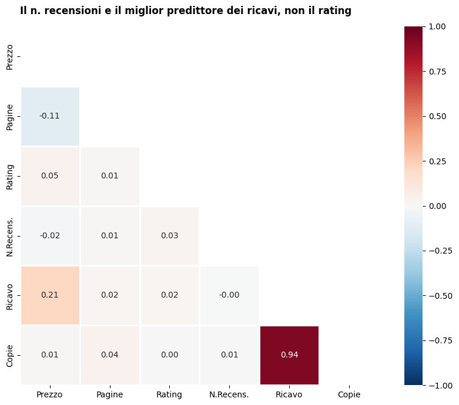
Composition charts
In this section we see:
- the 100% horizontal stacked bar chart, which shows the share of the 3 formats for each genre, highlighting that Sci-Fi and Fantasy lead the digital sector.
- The interactive Plotly treemap visualizes the genre → series hierarchy with color proportional to revenue.
- Finally, a critical note on the pie chart with a comparison: on the left, a 2-slice pie chart that works (Print vs Digital), on the right, the same with 10 genres that becomes unreadable.
Stacked Bar 100%
# STACKED BAR 100%: Format share by genre
sd = df.groupby(['genere','formato'])['ricavo'].sum().reset_index()
sp = sd.pivot(index='genere',columns='formato',values='ricavo')
spct = sp.div(sp.sum(axis=1),axis=0)*100
spct = spct.sort_values('Ebook',ascending=True)
fig, ax = plt.subplots(figsize=(12,6))
fc = {'Print':'#2c3e50','Ebook':'#3498db','Audiobook':'#e74c3c'}
bot = np.zeros(len(spct))
for fmt in ['Print','Ebook','Audiobook']:
v = spct[fmt].values
ax.barh(spct.index,v,left=bot,label=fmt,color=fc[fmt],height=0.65,alpha=0.85)
for i,(val,b) in enumerate(zip(v,bot)):
if val>10: ax.text(b+val/2,i,f'{val:.1f}%',ha='center',va='center',fontsize=9,color='white',fontweight='bold')
bot += v
ax.set_title('Sci-Fi and Fantasy lead the digital transition',fontsize=12,fontweight='bold',loc='left',pad=15)
ax.legend(loc='lower right'); ax.set_xlim(0,100)
plt.tight_layout(); plt.show()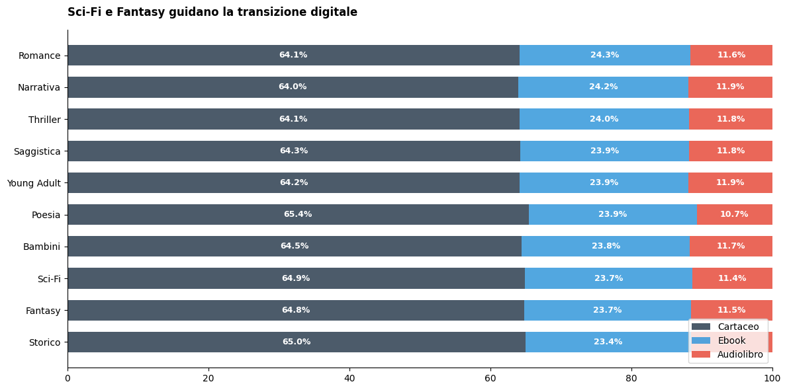
Treemap (Interactive Plotly)
# TREEMAP
td = df.groupby(['genere','collana'])['ricavo'].sum().reset_index()
fig = px.treemap(td, path=['genere','collana'], values='ricavo', color='ricavo', color_continuous_scale='RdYlBu_r',
title='<b>Revenue Map: Genre > Series</b>')
fig.update_layout(margin=dict(t=50,l=10,r=10,b=10), height=500)
fig.show()Note on the Pie Chart
The pie chart is the most criticized chart. The human eye is bad at comparing angles.
Rule: If you could use a bar chart instead, use the bar chart. Acceptable only with 2-3 categories and a dominant one.
# Pie: when it works and when it doesn't
fig, (ax1,ax2) = plt.subplots(1,2,figsize=(14,5))
ax1.pie([55,45],labels=['Print','Digital'],autopct='%1.0f%%',colors=['#2c3e50','#3498db'],startangle=90,textprops={'fontsize':12})
ax1.set_title('OK: 2 categories, clear',fontsize=10,fontweight='bold',pad=15)
rgp = df.groupby('genere')['ricavo'].sum().sort_values()
ax2.pie(rgp.values,labels=rgp.index,autopct='%1.0f%%',startangle=90,textprops={'fontsize':8})
ax2.set_title('NO: 10 categories, unreadable!',fontsize=10,fontweight='bold',pad=15)
plt.tight_layout(); plt.show()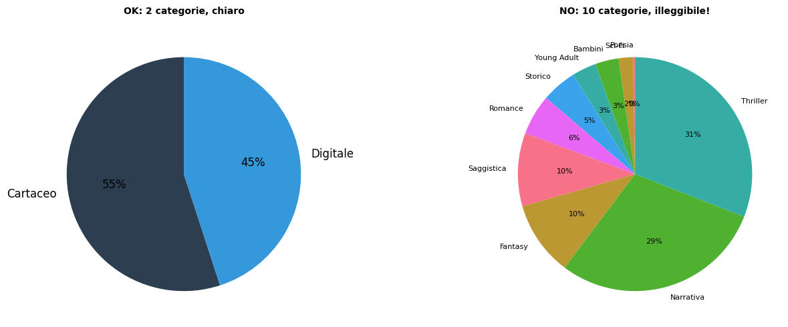
Time series charts
The line chart plots monthly sales by format with different styles (audiobook in red dashed line), semi-transparent yellow bands over Decembers, and a title announcing the tripling of audiobooks.
The stacked area chart shows the evolution of cumulative revenue for the top 5 genres, making the growing contribution of Thriller visible.
Line Chart
```python
# LINE CHART: Vendite mensili per formato
vm = df.groupby([df['data'],'formato'])['copie_vendute'].sum().reset_index()
fig, ax = plt.subplots(figsize=(14,6))
for fmt,sty in [('Cartaceo',{'color':'#2c3e50','lw':2.5,'ls':'-'}),
('Ebook',{'color':'#3498db','lw':2.5,'ls':'-'}),
('Audiolibro',{'color':'#e74c3c','lw':2.5,'ls':'--'})]:
s = vm[vm['formato']==fmt]
ax.plot(s['data'],s['copie_vendute']/1000,label=fmt,color=sty['color'],linewidth=sty['lw'],linestyle=sty['ls'])
for y in [2023,2024]:
ax.axvspan(pd.Timestamp(f'{y}-12-01'),pd.Timestamp(f'{y}-12-31'),alpha=0.1,color='#f39c12',label='_nolegend_')
ax.set_title("L'audiolibro triplica in 2 anni: il futuro e' multiformat",fontsize=12,fontweight='bold',loc='left',pad=15)
ax.set_ylabel('Copie (migliaia)'); ax.legend(loc='upper left')
ax.xaxis.set_major_formatter(mdates.DateFormatter('%b %Y')); ax.xaxis.set_major_locator(mdates.MonthLocator(interval=3))
plt.xticks(rotation=30); plt.tight_layout(); plt.show()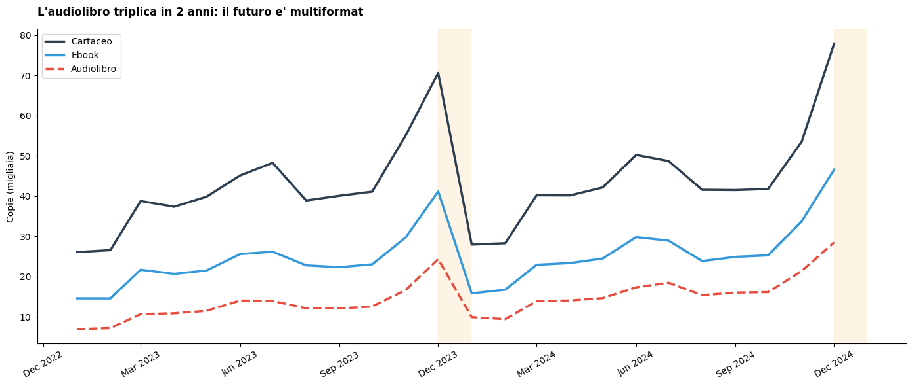
Stacked Area Chart
# STACKED AREA: Ricavi per genere Top 5
t5 = df.groupby('genere')['ricavo'].sum().nlargest(5).index
rm = (df[df['genere'].isin(t5)].groupby([df['data'],'genere'])['ricavo'].sum().reset_index()
.pivot(index='data',columns='genere',values='ricavo').fillna(0)/1000)
fig, ax = plt.subplots(figsize=(14,6))
ax.stackplot(rm.index,[rm[g] for g in rm.columns],labels=rm.columns,
colors=['#2c3e50','#e74c3c','#3498db','#27ae60','#f39c12'],alpha=0.7)
ax.set_title('Ricavi in crescita, trainati dal Thriller',fontsize=12,fontweight='bold',loc='left',pad=15)
ax.set_ylabel('Ricavi (EUR K)'); ax.legend(loc='upper left')
ax.xaxis.set_major_formatter(mdates.DateFormatter('%b %Y')); ax.xaxis.set_major_locator(mdates.MonthLocator(interval=3))
plt.xticks(rotation=30); plt.tight_layout(); plt.show()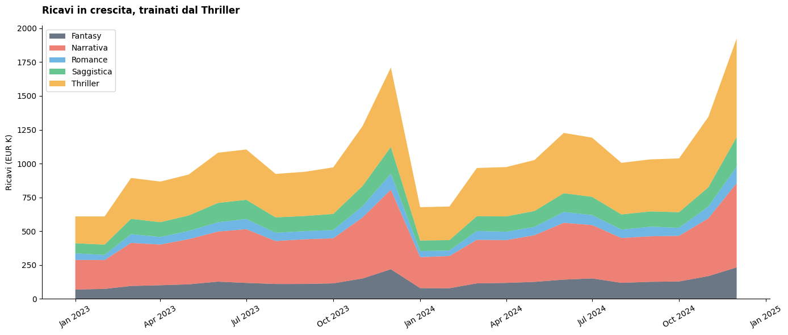
Fundamental techniques
The power of annotations
A dramatic "before/after" comparison can be made on the same line chart of quarterly revenues.
- Above: the generic chart with descriptive title "Quarterly Revenues (EUR M)".
- Below: the same data with a dashed green target line, green/red colored points above/below target, annotated arrows on peak and minimum, a green box in the top right with the 3 recommended actions, and a title that says "Anti-seasonality strategies are needed for Q1".
# ANNOTATIONS: Before and After
rq = df.groupby(df['data'].dt.to_period('Q'))['ricavo'].sum()/1e6
rq.index = rq.index.to_timestamp()
fig, (ax1,ax2) = plt.subplots(2,1,figsize=(14,10),sharex=True)
ax1.plot(rq.index,rq.values,'o-',color='#3498db',linewidth=2)
ax1.set_title('Ricavi Trimestrali (EUR M)',fontsize=13); ax1.set_ylabel('EUR M')
ax1.text(0.5,-0.05,'BEFORE: informative but not actionable',transform=ax1.transAxes,ha='center',fontsize=11,color='red')
ax2.plot(rq.index,rq.values,'o-',color='#2c3e50',linewidth=2.5)
tgt = rq.mean()*1.1
ax2.axhline(tgt,color='#27ae60',linestyle='--',linewidth=1.5,alpha=0.7)
ax2.text(rq.index[-1],tgt+0.1,f'Target: EUR {tgt:.1f}M',fontsize=9,color='#27ae60',fontweight='bold',ha='right')
for i in range(len(rq)):
c = '#27ae60' if rq.values[i]>=tgt else '#e74c3c'
ax2.plot(rq.index[i],rq.values[i],'o',color=c,markersize=10,zorder=5)
ax2.annotate(f'Peak: EUR {rq.max():.1f}M',xy=(rq.idxmax(),rq.max()),
xytext=(rq.idxmax()-pd.DateOffset(months=3),rq.max()+0.5),
arrowprops=dict(arrowstyle='->',color='#27ae60'),fontsize=10,fontweight='bold',color='#27ae60')
ax2.annotate(f'Minimum: EUR {rq.min():.1f}M',xy=(rq.idxmin(),rq.min()),
xytext=(rq.idxmin()+pd.DateOffset(months=2),rq.min()-0.1),
arrowprops=dict(arrowstyle='->',color='#e74c3c'),fontsize=10,fontweight='bold',color='#e74c3c')
ax2.set_title('Anti-seasonality strategies are needed for Q1',fontsize=13,fontweight='bold',loc='left',pad=15)
ax2.set_ylabel('EUR M')
ax2.text(0.9,0.95,'ACTION: Q1 Promotions, thriller releases\n moved up to January',
transform=ax2.transAxes,fontsize=9,va='top',ha='right',
bbox=dict(boxstyle='round,pad=0.5',facecolor='#e8f5e9',alpha=0.9))
ax2.text(0.5,-0.1,'AFTER: same data, tells story + suggests action',transform=ax2.transAxes,ha='center',fontsize=11,color='green')
for ax in [ax1,ax2]: ax.spines['top'].set_visible(False); ax.spines['right'].set_visible(False)
plt.tight_layout(); plt.show()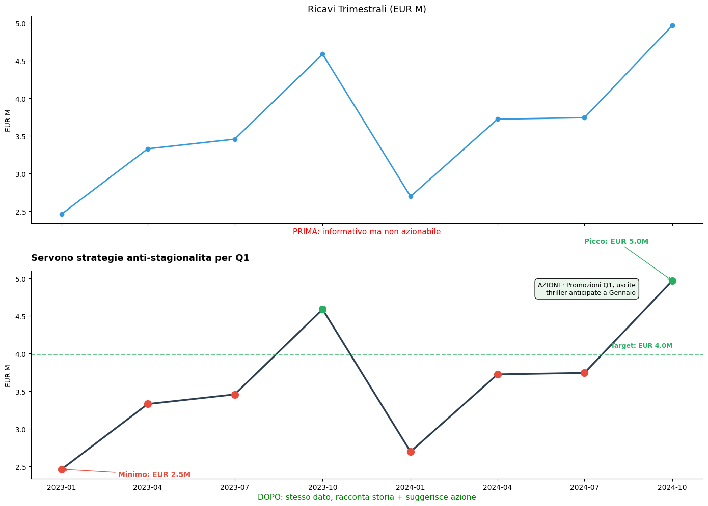
Color in Data Visualization
| Type | Usage |
|---|---|
| Sequential | Low → High |
| Diverging | Negative ← Neutral → Positive |
| Categorical | Distinct categories |
**Rules:** Grey = default. Max 6-7 colors. Attention colorblind (~8% men).
Now we only see a horizontal bar chart of YoY growth by genre. We use only 3 colors with semantic meaning: red for decline, grey for moderate growth, green for strong growth (>15%). Labels show the delta with sign. This demonstrates the principle "grey = default, color only to highlight".
```python
# STRATEGIC COLOR: YoY Variation
r23 = df[df['anno']==2023].groupby('genere')['ricavo'].sum()
r24 = df[df['anno']==2024].groupby('genere')['ricavo'].sum()
yoy = ((r24-r23)/r23*100).sort_values()
fig, ax = plt.subplots(figsize=(12,6))
cy = ['#e74c3c' if v<0 else '#bdc3c7' if v<15 else '#27ae60' for v in yoy.values]
bars = ax.barh(yoy.index,yoy.values,color=cy,height=0.6)
ax.axvline(0,color='#2c3e50',linewidth=0.8)
for bar,val in zip(bars,yoy.values):
ax.text(val+(1 if val>=0 else -1), bar.get_y()+bar.get_height()/2,
f'{val:+.1f}%',va='center',ha='left' if val>=0 else 'right',fontsize=10,fontweight='bold',
color='#e74c3c' if val<0 else '#27ae60' if val>=15 else '#7f8c8d')
ax.set_title('YoY Growth: Fantasy explodes, Poetry declines',fontsize=13,fontweight='bold',loc='left',pad=15)
for sp in ['top','right','bottom','left']: ax.spines[sp].set_visible(False)
ax.xaxis.set_visible(False); ax.tick_params(left=False)
plt.tight_layout(); plt.show()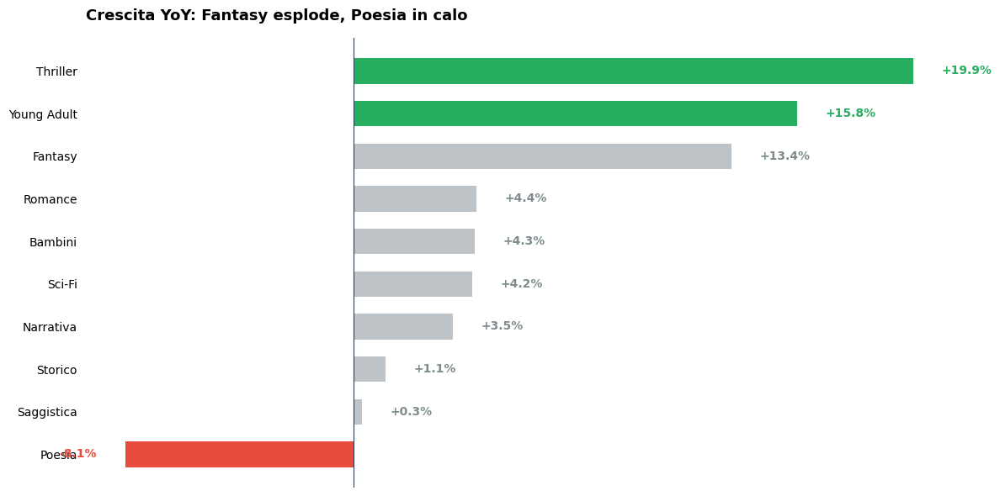
Small Multiples
"Small multiples are the most effective way to display complex data." — Edward Tufte. American statistician and sculptor.
Small multiples place multiple charts side-by-side, identical in structure but different in data, allowing instant comparisons between categories. The temptation is to use sharey=True to make scales comparable, but when absolute volumes are very different (Thriller at 35k copies, Historical at 3k), the readability of all minor genres is sacrificed on the altar of comparability.
The choice here is sharey=False: each genre has its own Y-scale, because the goal is not to compare absolute volumes (already done in the bar chart in section 5.1) but to read the internal dynamics of each genre over time.
The 6-month moving average filters seasonal noise and reveals the structural trend. The filled area shows raw monthly data as context; the dark line is the message. The % variation in the top right summarizes in a number what the eye already infers from the slope.
Practical rule: in small multiples, choose sharey=True only if the comparison of absolute values is the main story. If the story is the trend, free each panel on its own scale.
# SMALL MULTIPLES: Trend by genre (fixed)
t6 = df.groupby('genere')['ricavo'].sum().nlargest(6).index
fig, axes = plt.subplots(2, 3, figsize=(16, 8), sharey=False, sharex=True) # sharey=False!
for i, g in enumerate(t6):
ax = axes.flatten()[i]
s = (df[df['genere'] == g]
.groupby('data')['copie_vendute'].sum()
.reset_index())
s['ma6'] = s['copie_vendute'].rolling(6, center=True).mean() # 6 months, smoother
# Area = raw data (context), line = smoothed trend (message)
ax.fill_between(s['data'], 0, s['copie_vendute'] / 1000,
alpha=0.12, color='#3498db', label='Monthly')
ax.plot(s['data'], s['ma6'] / 1000,
color='#2c3e50', linewidth=2.5, label='6m Average')
# % variation first vs last value of MA
ma_clean = s['ma6'].dropna()
delta_pct = (ma_clean.iloc[-1] - ma_clean.iloc[0]) / ma_clean.iloc[0] * 100
color_delta = '#27ae60' if delta_pct > 0 else '#e74c3c'
arrow = '▲' if delta_pct > 0 else '▼'
ax.set_title(f'{g}', fontsize=12, fontweight='bold', loc='left')
ax.text(0.98, 0.95, f'{arrow} {abs(delta_pct):.0f}%',
transform=ax.transAxes, fontsize=11, fontweight='bold',
color=color_delta, ha='right', va='top')
# Y-axis with clear units
ax.set_ylabel('Copies (k)', fontsize=8)
ax.spines['top'].set_visible(False)
ax.spines['right'].set_visible(False)
ax.xaxis.set_major_formatter(mdates.DateFormatter('%b\n%y'))
ax.xaxis.set_major_locator(mdates.MonthLocator(interval=6))
ax.tick_params(labelsize=8)
# Unique legend at the top
axes[0, 0].legend(fontsize=8, loc='upper left', frameon=False)
plt.suptitle('Sales trend by genre — % variation over the entire period',
fontsize=14, fontweight='bold', y=1.02)
plt.tight_layout()
plt.show()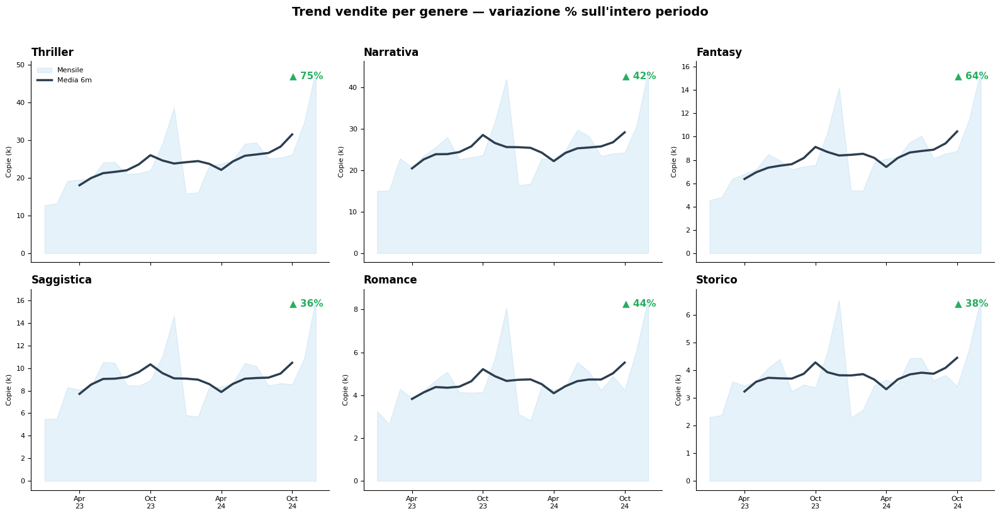
In the next notebook (Parte 2)
- When to use which chart: decision matrix based on communication objective
- Data transformation: normalization, log scale, indices, moving averages
- Advanced charts: Slope chart, Bump chart, Waffle, Dumbbell, Waterfall
- Dashboard design: how to compose multiple charts into a coherent view
"The purpose of visualization is insight, not pictures." — Ben Shneiderman
Source notebook: datavis_masterclass_parte1.ipynb